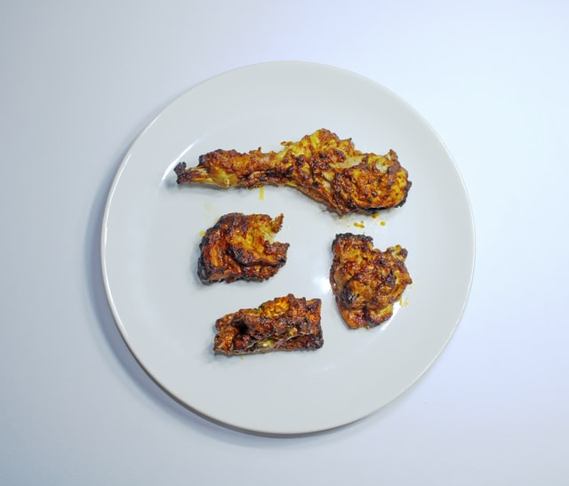

Chicken Tikka

The dish is popular in India, Bangladesh and Pakistan.
It is traditionally small pieces of boneless chicken baked using skewers on a brazier called Tikka
or over charcoal after marinating in Indian spices and yogurt—essentially a boneless version of tandoori chicken.
Ingredients for chicken tikka
- Chicken
- Butter
- Chili Pepper
- Garlic
- Onion
- Yogurt
- Cream
- Tomato
- Indian Spices
- Coriander
- Ginger
- Black Pepper
- Salt
- Oil
- Cumin
- Garlic Ginger Paste
Steps to make Chicken Tikka
- Take fresh boneless chicken in the bowl
- Add salt in it
- Add sum amount of Garlic Ginger paste
- Add oil
- Add Chili pepper into chicken
- Add yogurt into chicken
- Add Indian Spices into it
- Add sum amount of Tomato and Onion
- Keep it for 30 minutes to mix all the spices to the chicken
- Now keep chicken into Oven
- Your chicken tikka is ready to eat